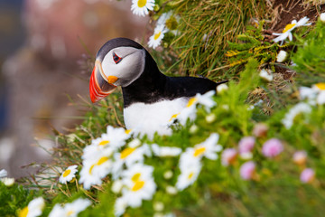

Land of contrasts with a dramatic volcanic landscape of geysers, hot springs, waterfalls, glaciers and black-sand beaches.Situated between the North Atlantic and the Arctic Ocean, Iceland has a milder climate than other areas thanks to the Gulf Stream;with temperatures that are cool in summer and remarkably mild in winter. The capital, Reykjavik, home to the majority of the population, runs on geothermal power and offers a renowned nightlife scene as well as Viking history museums.

"People are always asking me about eskimos,
but there are no eskimos in Iceland".Bjork"There is no more sagacious animal than the Icelandic horse. He is stopped by neither snow, nor storm, nor impassable roads, nor rocks, glaciers, or anything. He is courageous, sober, and surefooted. He never makes a false step, never shies. If there is a river or fjord to cross (and we shall meet with many) you will see him plunge in at once, just as if he were amphibious, and gain the opposite bank."
Jules Verne, Journey to the Center of the Earth